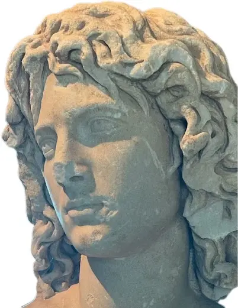
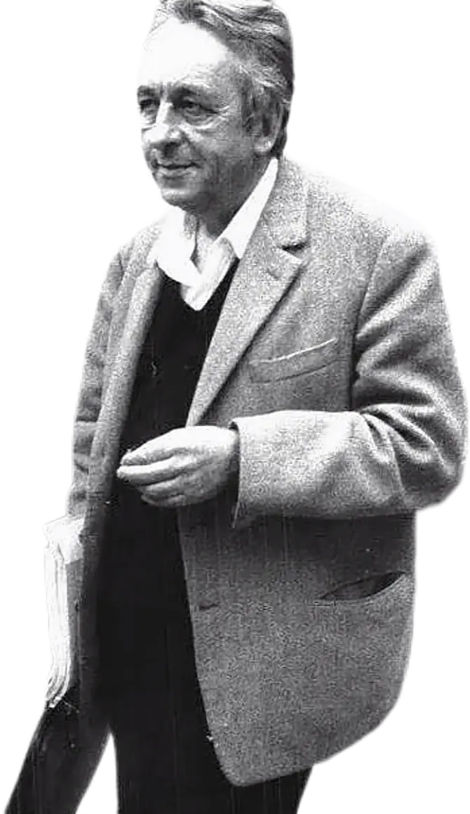

THEORY OS
连接马克思主义、精神分析、符号学与控制论，把概念编译成能够介入媒介和组织的执行接口。
CAPACITY / 16
A HIGH-ORDER ORGANIZATION FOR THEORETICAL RECONSTRUCTION
全球最酷的改造组织，聚集天才与怪才，夺回思想的生产权。
THEORY / ORGANIZATION / INTERVENTION
01 — ABOUT THE MACHINE
Ateamism 是一个理论逻辑改造基地，也是一台组织尚未命名之力量的机器。它拒绝成为温顺的文化品牌，而是把哲学、社会理论、技术、艺术与亚文化压进同一套高压装置。
我们追踪常识如何伪装成自然、权力如何藏进界面、个体如何被训练成可预测的数据。随后拆开这些结构，让被排除的天才、怪才与异常经验重新获得建构现实的权限。
我们的产出不以“观点”结束：文本必须生成方法，方法必须接入组织，组织必须能够改变力量的分配。思考不是解释世界的礼仪，而是重新配置世界的权限。
UNKNOWN NODE / SIGNAL 01

WE DO NOT SEEK MEMBERS.
WE SEEK FORCES.
03 — CURRENT OPERATIONS
把思想从学院式陈列柜中释放出来，使概念成为诊断器、协议、媒介武器与组织现实的操作系统。

连接马克思主义、精神分析、符号学与控制论，把概念编译成能够介入媒介和组织的执行接口。
译介 Anton Jäger，追踪超政治时代的孤立、动员与组织真空，重建中文语境下的集体行动问题。
识别“常识”背后的隐形公理，制造反例、叙事与原型，把被判定为不可思议的事重新写入现实选项。
保存动画、游戏、音乐与网络废墟中的异常信号，使亚文化不再只是消费身份，而成为新感性的训练场。
04 — SUBCULTURAL MEMORY BANK
动画、游戏、摇滚、网络残片不是装饰性趣味，而是思想尚未被体制化时留下的神经信号：欲望、失败、共同体与另一种生活的测试现场。
05 — ACCESS POINT
对论文、译稿、文化评论、理论原型与不可归类的实验文本开放。